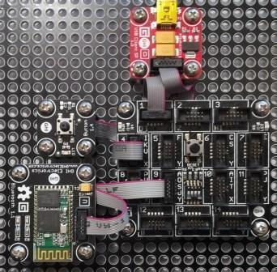

Version: 0.8.0
Bluetooth is connected as followed on FEZSpider:

| Module | Socket Type | Mainboard |
|---|---|---|
| Bluetooth | Socket Type U | Socket 9 |
| Button | Socket Type X | Socket 4 |
using System.Diagnostics;
using System.Threading;
using Bauland.Gadgeteer;
using GHIElectronics.TinyCLR.Pins;
namespace TestBluetooth
{
class Program
{
private static Button _button;
private static Bluetooth _bluetooth;
static void Main()
{
// Button connected on Socket 4 (X type) of FEZ Spider
// Bluetooth connected on Socket 9 (U type) of FEZ Spider
// Button long press (> 2 sec) enables pairing mode
// On Tera Term, select COM Port
// '0' will light button led off
// '1' will light button led on
Thread.Sleep(2000);
_button = new Button(FEZSpider.GpioPin.Socket4.Pin3, FEZSpider.GpioPin.Socket4.Pin4);
_button.LongPressed += Button_LongPressed;
_bluetooth = new Bluetooth(FEZSpider.GpioPin.Socket9.Pin3, FEZSpider.GpioPin.Socket9.Pin6, FEZSpider.UartPort.Socket9);
var client = _bluetooth.ClientMode;
_bluetooth.SetDeviceName("EMX-BT");
_bluetooth.SetPinCode("1234");
_bluetooth.BluetoothStateChanged += Bt_BluetoothStateChanged;
_bluetooth.DataReceived += Bt_DataReceived;
while (true)
{
Thread.Sleep(20);
}
}
private static void Button_LongPressed(object sender, ButtonEventHandlerArgs args)
{
_bluetooth?.ClientMode.EnterPairingMode();
}
private static void Bt_DataReceived(Bluetooth sender, string data)
{
if (data == "0")
_button.Led = false;
if (data == "1")
_button.Led = true;
}
private static void Bt_BluetoothStateChanged(Bluetooth sender, Bluetooth.BluetoothState btState)
{
switch (btState)
{
case Bluetooth.BluetoothState.Connected:
Debug.WriteLine("Connected: " + btState);
sender.ClientMode.SendLine("Hello !");
break;
case Bluetooth.BluetoothState.Connecting:
Debug.WriteLine("Connecting: " + btState);
break;
case Bluetooth.BluetoothState.Disconnected:
Debug.WriteLine("Disconnected: " + btState);
break;
case Bluetooth.BluetoothState.Initializing:
Debug.WriteLine("Initializing: " + btState);
break;
case Bluetooth.BluetoothState.Inquiring:
Debug.WriteLine("Inquiring: " + btState);
break;
case Bluetooth.BluetoothState.Ready:
Debug.WriteLine("Ready: " + btState);
break;
}
}
}
}